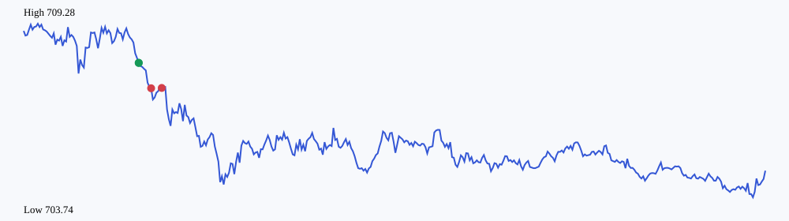

| 合约 | 方向 | 数量 | 入场 | 出场 | 净盈亏 | 原因 |
|---|---|---|---|---|---|---|
| QQQ260915P709000.US | put | 5 | 1.800000 | 2.310000 | 240.0000 | trailing_stop |
| QQQ260915P709000.US | put | 5 | 1.800000 | 2.420000 | 295.0000 | trailing_stop |
被拒绝信号：2；系统事件：17
{
"data_quality": {
"one_minute_bars": 420,
"missing_minutes_between_observations": 0
},
"comparison_20d": {
"trading_days": 4,
"trades": 9,
"net_pnl": "-205.0000",
"win_rate": "0.7777777777777777777777777778",
"average_slippage": "0.000000"
}
}